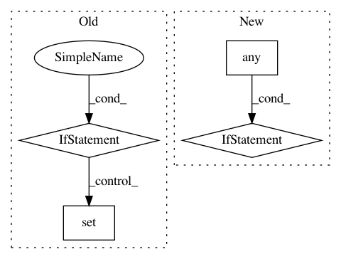

097217a383e91ea4d11448a55dff79c748cf641d,describe/utils/stats.py,,system_stats,#Any#,6
Before Change
i_atomic_numbers = set(atoms.get_atomic_numbers())
i_symbols = set(atoms.get_chemical_symbols())
distance_matrix = atoms.get_all_distances(mic=True)
elif isinstance(atoms, System):
i_atomic_numbers = set(atoms.numbers)
i_symbols = set(atoms.symbols)
distance_matrix = atoms.get_periodic_distances()
// Gather atomic numbers and symbols
After Change
// Gather min distance. For periodic systems we must also consider
// distances from an atom to it"s periodic copy, as given by
// get_distance_matrix() on the diagonal.
if np.any(system.get_pbc()):
triu_indices = np.triu_indices(len(distance_matrix), k=0)
else:
triu_indices = np.triu_indices(len(distance_matrix), k=1)
distances = distance_matrix[triu_indices]
i_min_dist = distances.min()
if min_distance is None or i_min_dist < min_distance:
In pattern: SUPERPATTERN
Frequency: 3
Non-data size: 4
Instances
Project Name: SINGROUP/dscribe
Commit Name: 097217a383e91ea4d11448a55dff79c748cf641d
Time: 2017-08-08
Author: lauri.himanen@aalto.fi
File Name: describe/utils/stats.py
Class Name:
Method Name: system_stats
Project Name: biocore/scikit-bio
Commit Name: 224d658205ab0f21cf654b4c3f994e7283ba6d82
Time: 2014-04-02
Author: jai.rideout@gmail.com
File Name: skbio/core/distance.py
Class Name: DistanceMatrix
Method Name: _validate
Project Name: soft-matter/trackpy
Commit Name: 42be11c7824427fb0a8490f3bcd635410ded57b3
Time: 2017-07-27
Author: caspervdw@gmail.com
File Name: trackpy/linking/find_link.py
Class Name: FindLinker
Method Name: get_relocate_candidates